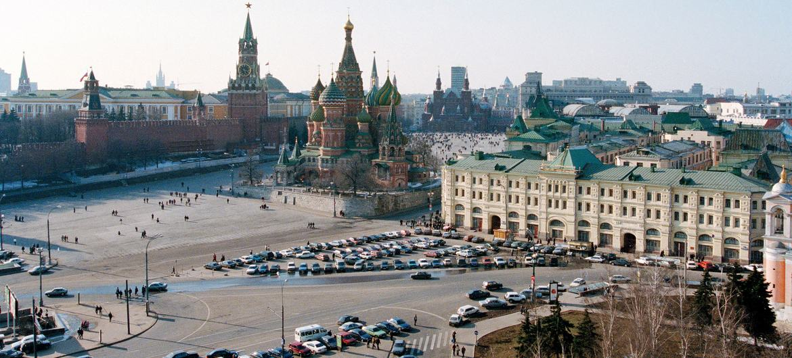

Россия место силы
Росси́я, или Росси́йская Федера́ция — государство в Восточной Европе и Северной Азии. Россия — крупнейшее государство в мире, её территория в международно признанных границах составляет 17 098 246 км².Перейти к разделу «Географическое положение» Население страны в тех же границах, но вместе с принадлежащем Украине Крымом, захват и последующая аннексия которого не получили международного признания, составляет 146 447 424 чел. (2023; 9-е место в мире).
Столица — Москва. Государственный язык на всей территории страны — русский,Перейти к разделу Языки в ряде регионов России также установлены свои государственные и официальные языки. Денежная единица — российский рубль.
Россия — многонациональное государство с широким этнокультурным многообразием. Согласно результатам переписей населения России 2010 года, а также аннексированных Россией украинских Крыма и Севастополя 2014 года, в стране живут представители свыше 190 национальностей, среди которых русские составляют свыше 80 %, а русским языком владеют свыше 99,4 % россиян. Бо́льшая часть населения (около 75 %) в религиозном отношении относит себя к православию, что делает Россию страной с самым многочисленным православным населением в мире.
Россия — федеративная президентско-парламентская республика. С 31 декабря 1999 года (с перерывом в 2008—2012 годах, когда президентом был Дмитрий Медведев) должность президента России занимает Владимир Путин. C 16 января 2020 года в должности председателя правительства находится Михаил Мишустин. За годы правления Владимира Путина политический режим России сменился с демократического на авторитарную диктатуру.
